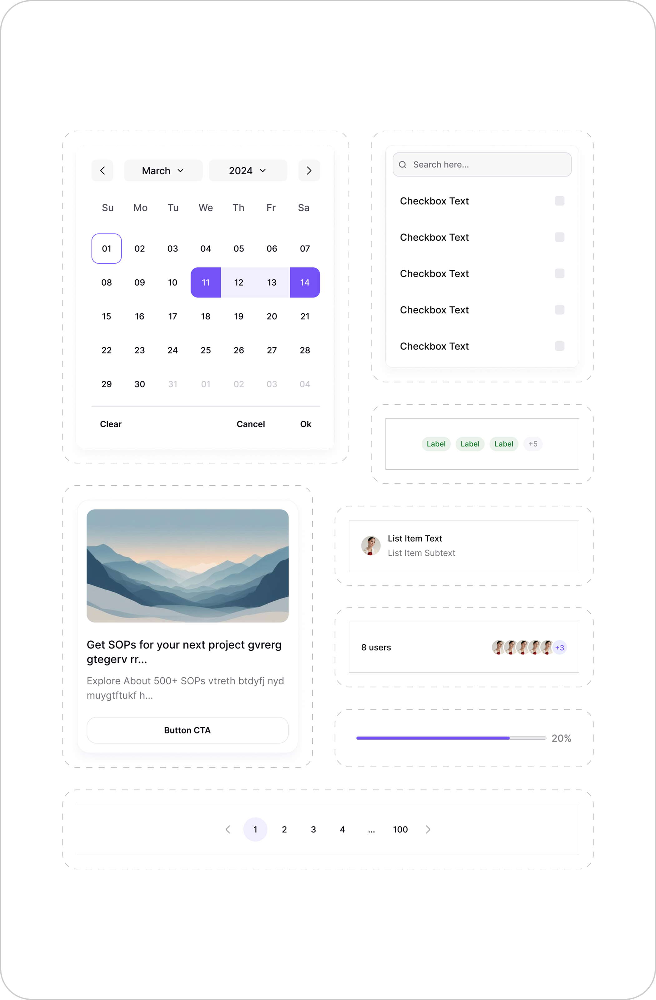
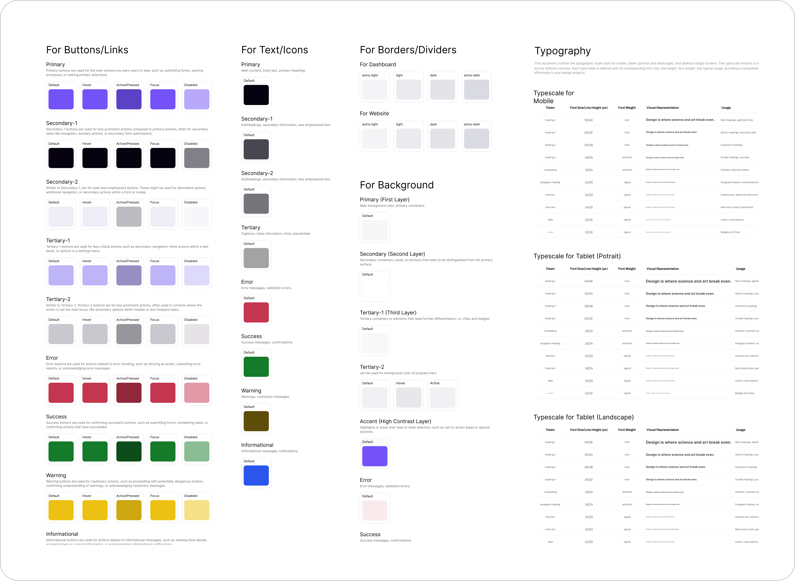

Ajna Design System.
Bringing structure, speed, and dark mode to internal tools, so every team stops reinventing the same button.

Every team was designing the same button. Again. And again. And again.
Internal tools lacked visual consistency. Buttons, forms, layouts, every team was building them from scratch, wasting time and introducing inconsistencies that compounded across products. Developers spent hours in back-and-forth over specs that should have been self-evident. Designers wanted templates they could trust.
Research insights
Inconsistent visual patterns across tools.
Developers needed cleaner specs to reduce back-and-forth.
Designers wanted ready-made templates and variants to move faster.
Built for: Product & engineering teams · Designers · Developers
Not just designing components. Architecting decisions.
- 01Structured components using variants and variables.
- 02Applied Figma variable modes to enable one-click dark mode.
- 03Used auto layout + variables to ensure responsive behavior.
- 04Documented usage and worked closely with developers to ensure feasibility.
- 05Explored edge cases through real-world use and feedback loops.
Tokens, not opinions.
Every visual decision, color, spacing, type, borders, was encoded into tokens that scale across contexts and switch themes in one click.
Buttons & Links
8 variantsPrimary, Secondary (1 & 2), Tertiary (1 & 2), Error, Success, Warning, Informational, each with Default, Hover, Active, Focus and Disabled states.
Text & Icons
8 semantic colorsPrimary, Secondary (1 & 2), Tertiary, Error, Success, Warning, Informational, mapped to content hierarchy from headings to captions.
Backgrounds
5 layers deepPrimary → Secondary → Tertiary (1 & 2) → Accent. Each layer semantically named so nesting feels automatic, not manual.
Borders & Dividers
4 weightsExtra-light, Light, Dark, Extra-dark, separate tokens for dashboard vs. website contexts.
Components in use
A snapshot of patterns assembled from the same tokens, date picker, search + checkbox list, label group, list item, avatar stack, progress bar, pagination and card.

The full spec sheet
Button states, semantic text and background colors, border weights and the responsive typescale, all defined once and referenced everywhere.

Responsive typescale
A harmonious scale across four breakpoints, every token named, sized and weighted for its exact purpose in the hierarchy.
Spacing system
16 tokens from 2px to 80px, from icon-text micro-gaps to major section breaks.
Icon-text gaps, badge padding
Button padding, avatar spacing
Card internal spacing
Major section breaks
Dark mode wasn't a feature. It was a proof of architecture.
Figma variable modes meant dark mode wasn't a separate file or a duplication nightmare. One click. Every component. Every screen.
Clear override logic so designers could customize without breaking the system. Flexibility without chaos.
Constraints & trade-offs
- Needed to work with existing design legacy where possible.
- Prioritized depth over breadth, fewer components, better quality.
- Scoped system to 2D only for faster adoption across teams.
Numbers that moved.
The biggest win wasn't the dark mode toggle.
"Working on Ajna taught me the power of good structure. Small decisions in token naming or variable logic can impact teams weeks later."
The dark mode toggle was fun to build. But the biggest win was watching other designers move faster, with less friction. That's what a design system is actually for.
Variables aren't just a Figma feature, they're a way of thinking about decisions that need to scale.
Start with developer feedback earlier. The best tokens are the ones engineers actually want to use.